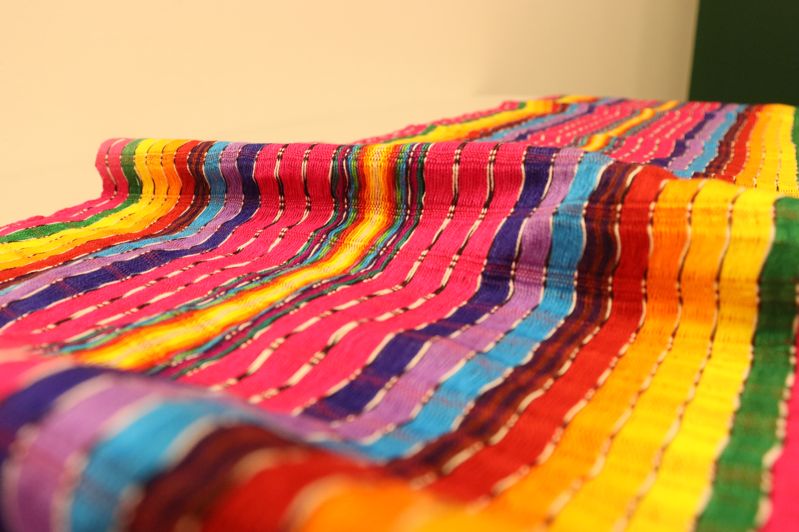
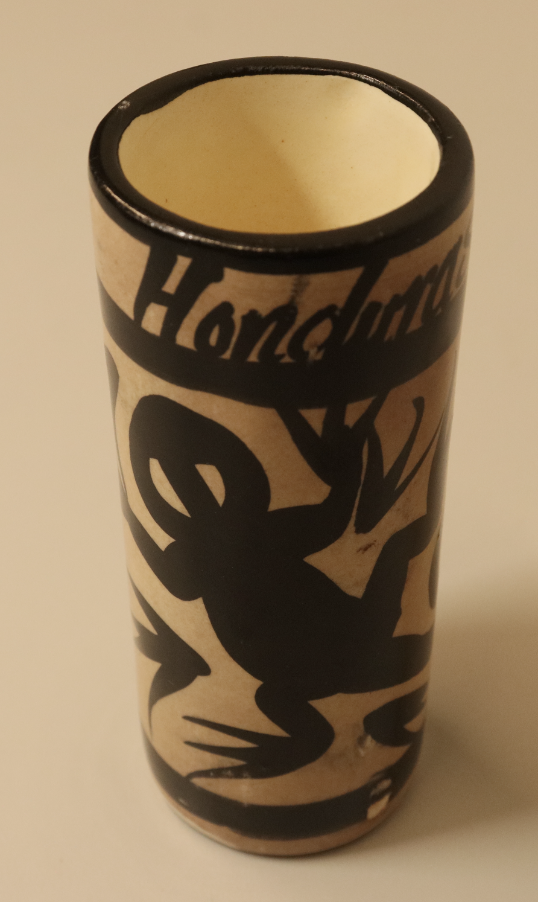
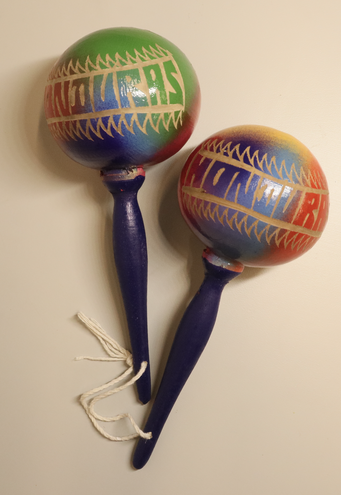

Threads Between Us
Drawing from magical realism, embodied storytelling, and liminal game design, this project proposes a tangible interactive interface that fosters intergenerational dialogue in Latine families. The goal is to combine objects from home and situated engagement for guided communication.


The project was crafted using traditional Lenca cloth patterns weaved by hand in a loom.
The research for this project included a thorough literature review that was iterated on throughout the course of two year. A cultural probe study was deployed amongst Latin American particpants to compile design inspirations that resulted in three prototype ideas. These then received feedback through a workshop with digital media and HCI designers. A final prototype was created based on this feedback with an IRB study currently under review.


This project was presented at the Georgia Tech's Digital Media Demo day. A paper on it is currently on the works for submission to TEI and CHI'27.
By engaging in the tactile process of weaving together threads, participants can experience a sense of unity and shared humanity. It is meant to foster empathy by inviting users to embody and understand the other's lived experience through tactile affect.
